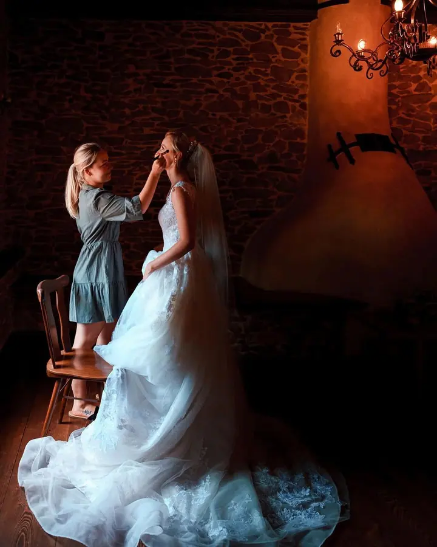
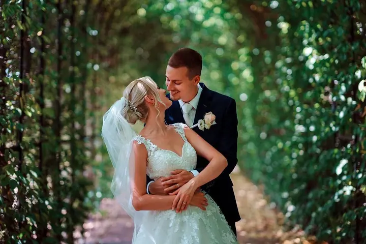
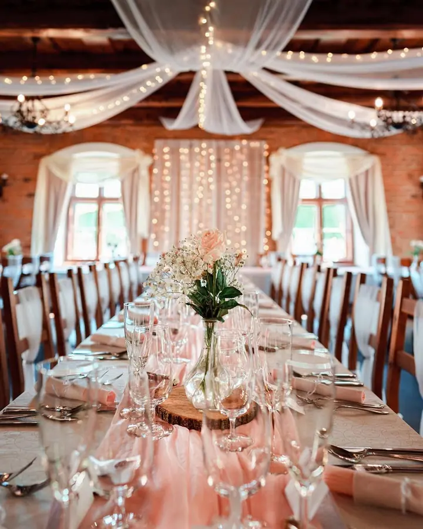
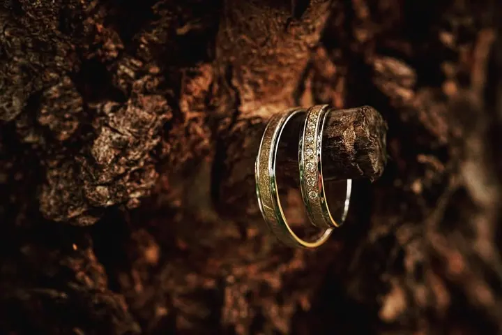

jedna
Svatební focení
Celý den fotím reportážně, od ranních příprav přes obřad až po večerní oslavu. Patří k tomu i společné fotky s rodinou a krátký portrét novomanželů v klidu.

Svatební a portrétní fotograf · Frýdek-Místek, Ostrava, Moravskoslezský kraj

Jmenuji se Kamil Valchář a fotím svatby v Ostravě, ve Frýdku-Místku a v celém Moravskoslezském kraji. Pracuji reportážním stylem bez nuceného pózování a sleduji drobné detaily, smích i dojetí, ke kterým se budete rádi vracet i po letech.
Více o mně
Co fotím
jedna
Celý den fotím reportážně, od ranních příprav přes obřad až po večerní oslavu. Patří k tomu i společné fotky s rodinou a krátký portrét novomanželů v klidu.
Kromě svateb fotím i portréty. Jde mi o přirozené fotky bez strojených póz, v uvolněné atmosféře.
Každá svatba je jiná a já fotím právě tu vaši.

Za objektivem
Jsem svatební fotograf ze Frýdku-Místku. Specializuji se na přirozenou svatební fotografii, která zachycuje skutečné emoce, atmosféru a momenty, které se už nebudou opakovat. Bez nuceného pózování a bez stresu, aby vaše fotky vyprávěly opravdový příběh.
Během svatebního dne se snažím být nenápadný, aby focení nijak nenarušovalo jeho průběh. Sleduji, co se kolem mě děje, a fotím drobné detaily, radost, smích i dojetí. Na společné fotky s rodinou a krátký portrét novomanželů si najdeme klidnou chvíli.
Každá svatba je jiná, proto ke každému páru přistupuji individuálně. Nejčastěji fotím v Ostravě, ve Frýdku-Místku a okolí, ale rád přijedu i do jiných částí České republiky.
Kamil
Napište mi přes formulář nebo e-mail, případně zavolejte. Ověřím, jestli mám váš termín volný, a pošlu vám podrobnosti k balíčkům.
Probereme spolu harmonogram svatby, místa a vaše představy o fotkách. V balíčku Standard se potkáme osobně ve Frýdku-Místku.
Fotím reportážně a nenápadně, od příprav přes obřad až po oslavu podle zvoleného balíčku. Vyfotím i společné fotky s rodinou a krátký portrét vás dvou.
Náhledové fotky máte do 2 až 3 týdnů. Pečlivě upravené fotografie ve vysokém rozlišení dostanete elektronicky přes skryté album, které je dostupné rok od svatby.
Portfolio
Otázky
Pro rok 2026 nabízím tři balíčky: Basic za 11 500 Kč (3 hodiny, cca 150 fotek), Standard za 14 500 Kč (5 hodin, cca 300 fotek a 30 tištěných) a Premium za 17 000 Kč (9 hodin, cca 500 fotek a 50 tištěných).
Ano, svatby fotím po celé České republice. Doprava je v balíčku zahrnutá do 50, 80 nebo 120 km, za každý další kilometr účtuji 10 Kč.
Ano. Za svatbu v pracovní den od pondělí do pátku účtuji jednorázový příplatek 1000 Kč.
Nic se neděje, rád zůstanu déle. Každá hodina nad rámec balíčku stojí 1000 Kč. K fotkám si můžete přikoupit i dřevěnou krabičku a USB flash disk s monogramem.
Napište pár vět o tom, co si představujete. kamil.valchar@seznam.cz